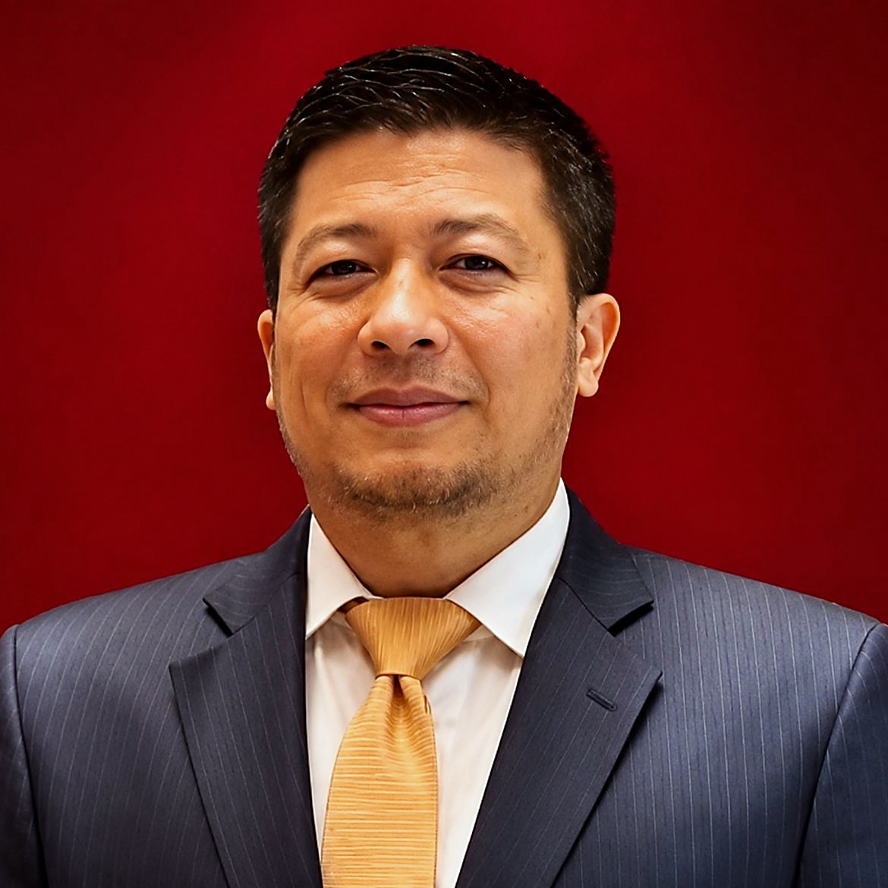

Alfath Latuconsina
🚀 About This Platform
USECASE-STUDIO.xyz is a personal showcase — a place to turn real-world ideas into functional, working prototypes rather than slides. Each module is a fully operational dashboard with its own login, role-based access, and live data, built to demonstrate how a concept becomes a usable tool from end to end.
👤 About Alfath Latuconsina
Alfath Latuconsina is a project-management and banking professional who believes the best ideas deserve to be built, not just presented. His work sits at the intersection of strategy and execution — taking complex operational challenges and shaping them into clear, data-driven tools that teams can actually use every day.
His interests span the full delivery lifecycle: managing strategic projects and risks, developing people and capabilities, raising service-quality standards, and organizing institutional knowledge. Across all of them, the goal stays the same — make information visible, decisions easier, and progress measurable.
With a hands-on, problem-solving mindset, he is equally comfortable framing the big picture and getting into the details to make something work end to end. USECASE-STUDIO.xyz is his personal studio for prototyping these ideas in the open — proof that a concept can become a living, working product.